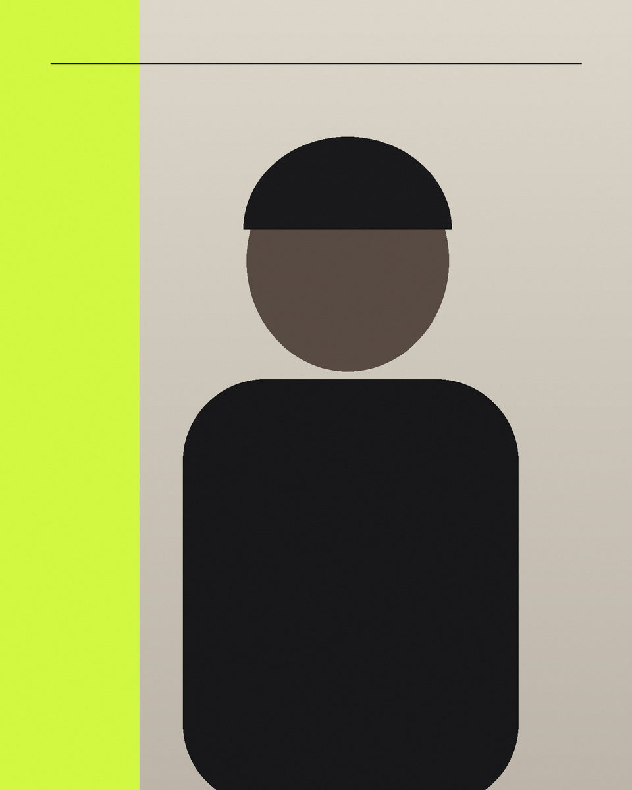

Read the room
Observe first, anticipate the energy, and make images that feel specific to the people and place.
I photograph the charged space between performance and memory: the gesture before the chorus lands, the expression that makes a portrait feel lived-in, and the atmosphere around moments people want to keep.

[Replace this paragraph with a first-person biography of roughly 120–180 words. Include your real location, experience, working approach, and the kinds of people or organizations you most want to work with.]
[Use this paragraph to describe how you prepare, collaborate, work on location, and deliver images. Keep it concrete, warm, and free of invented credentials.]
Observe first, anticipate the energy, and make images that feel specific to the people and place.
Move between wide context, decisive action, human detail, and a memorable closing frame.
Set expectations clearly, protect private details, and prepare web- and print-ready files for the agreed use.
No client, artist, venue, publication, award, or testimonial has been inserted. Add only real, approved proof in src/site.json.